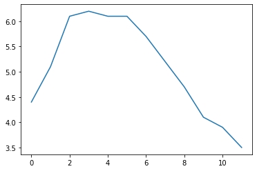
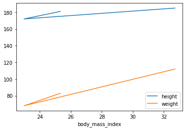

3 Relational Database and data wrangling
|
|

|
3.1 Queringing data with BigQuery
Structured Query Language, or SQL, is the programming language used with databases, and it is an important skill for any data scientist. In this example, you’ll build your SQL skills using BigQuery, a web service work as database management system that lets you apply SQL to huge datasets.
3.1.1 Preliminaries for google colab (optional)
We want to start exploring the Google BiqQuery public datasets. Let’s start by walking through the required setup steps, and then we can load and explore some data.
If you are using colab. Follow this quickstart guide, which will explain how to: 1. Create a Cloud Platform project if you don’t have one already. 2. Enable billing for the project (If you apply the free trial, you already satisfy this condition.) 3. Enable the BigQuery API 4. Enabling the Service account
Now we need to authenticate to gain access to the BigQuery API. We will create a client, specifying the service account key file (replace ‘lunar-pact-378812-7a28b789bde2.json’ with your key file).
# @title Alternative Setup
#from google.colab import auth
#from google.cloud import bigquery
#from google.colab import data_table
#project = 'lunar-pact-378812' # Project ID inserted based on the query results selected to explore
#location = 'US' # Location inserted based on the query results selected to explore
#client = bigquery.Client(project=project, location=location)
#data_table.enable_dataframe_formatter()
#auth.authenticate_user()Now that we’re authenticated, we need to load the BigQuery package, and the google.colab.data_table package that can be used to display large pandas dataframes as an interactive data. Loading data_table is optional, but it will be useful for working with data in pandas.
3.1.2 Create the reference
You can also work with Kaggle, which provide bigquery integration that you do not need to setup a google account. Each Kaggle user can scan 5TB every 30 days for free. Once you hit that limit, you’ll have to wait for it to reset. See https://www.kaggle.com/product-feedback/48573 for more details.
The first step in the workflow is to create a Client object. As you’ll soon see, this Client object will play a central role in retrieving information from BigQuery datasets.
We’ll work with a dataset of posts on Hacker News, a website focusing on computer science and cybersecurity news. In BigQuery, each dataset is contained in a corresponding project. In this case, our hacker_news dataset is contained in the bigquery-public-data project.
To access the dataset, We begin by constructing a reference to the dataset with the dataset() method. Next, we use the get_dataset() method, along with the reference we just constructed, to fetch the dataset.
See the full list of public datasets or the kaggle bigquery dataset if you want to explore others.
Every dataset is just a collection of tables. You can think of a dataset as a spreadsheet file containing multiple tables, all composed of rows and columns.We use the list_tables() method to list the tables in the dataset.
# List all the tables in the "hacker_news" dataset
tables = list(client.list_tables(dataset))
# Print names of all tables in the dataset (there are four!)
for table in tables:
print(table.table_id)comments
full
full_201510
storiesSimilar to how we fetched a dataset, we can fetch a table. In the code cell below, we fetch the full table in the hacker_news dataset
In the next section, you’ll explore the contents of this table in more detail. For now, take the time to use the image below to consolidate what you’ve learned so far.

3.1.3 Table schema
The structure of a table is called its schema. We need to understand a table’s schema to effectively pull out the data we want.
In this example, we’ll investigate the full table that we fetched above.
# Print information on all the columns in the "full" table in the "hacker_news" dataset
table.schema[SchemaField('title', 'STRING', 'NULLABLE', None, 'Story title', (), None),
SchemaField('url', 'STRING', 'NULLABLE', None, 'Story url', (), None),
SchemaField('text', 'STRING', 'NULLABLE', None, 'Story or comment text', (), None),
SchemaField('dead', 'BOOLEAN', 'NULLABLE', None, 'Is dead?', (), None),
SchemaField('by', 'STRING', 'NULLABLE', None, "The username of the item's author.", (), None),
SchemaField('score', 'INTEGER', 'NULLABLE', None, 'Story score', (), None),
SchemaField('time', 'INTEGER', 'NULLABLE', None, 'Unix time', (), None),
SchemaField('timestamp', 'TIMESTAMP', 'NULLABLE', None, 'Timestamp for the unix time', (), None),
SchemaField('type', 'STRING', 'NULLABLE', None, 'Type of details (comment, comment_ranking, poll, story, job, pollopt)', (), None),
SchemaField('id', 'INTEGER', 'NULLABLE', None, "The item's unique id.", (), None),
SchemaField('parent', 'INTEGER', 'NULLABLE', None, 'Parent comment ID', (), None),
SchemaField('descendants', 'INTEGER', 'NULLABLE', None, 'Number of story or poll descendants', (), None),
SchemaField('ranking', 'INTEGER', 'NULLABLE', None, 'Comment ranking', (), None),
SchemaField('deleted', 'BOOLEAN', 'NULLABLE', None, 'Is deleted?', (), None)]Each SchemaField tells us about a specific column (which we also refer to as a field). In order, the information is:
- The name of the column
- The field type (or datatype) in the column
- The mode of the column (
'NULLABLE'means that a column allows NULL values, and is the default) - A description of the data in that column
For instance, the field has the SchemaField:
SchemaField('by', 'string', 'NULLABLE', "The username of the item's author.",())
This tells us: - the field (or column) is called by, - the data in this field is strings, - NULL values are allowed, and - it contains the usernames corresponding to each item’s author.
We can use the list_rows() method to check just the first five lines of of the full table to make sure this is right. This returns a BigQuery RowIterator object that can quickly be converted to a pandas DataFrame with the to_dataframe() method.
# Preview the first five lines of the "full" table
client.list_rows(table, max_results=5).to_dataframe()| title | url | text | dead | by | score | time | timestamp | type | id | parent | descendants | ranking | deleted | |
|---|---|---|---|---|---|---|---|---|---|---|---|---|---|---|
| 0 | None | None | I would rather just have wired earbuds, period... | <NA> | zeveb | <NA> | 1591717736 | 2020-06-09 15:48:56+00:00 | comment | 23467666 | 23456782 | <NA> | <NA> | <NA> |
| 1 | None | None | DNS? | <NA> | nly | <NA> | 1572810465 | 2019-11-03 19:47:45+00:00 | comment | 21436112 | 21435130 | <NA> | <NA> | <NA> |
| 2 | None | None | These benchmarks seem pretty good. Filterable... | <NA> | mrkeen | <NA> | 1591717727 | 2020-06-09 15:48:47+00:00 | comment | 23467665 | 23467426 | <NA> | <NA> | <NA> |
| 3 | None | None | Oh really?<p>* Excel alone uses 86.1MB of priv... | <NA> | oceanswave | <NA> | 1462987532 | 2016-05-11 17:25:32+00:00 | comment | 11677248 | 11676886 | <NA> | <NA> | <NA> |
| 4 | None | None | These systems are useless. Of the many flaws:... | <NA> | nyxxie | <NA> | 1572810473 | 2019-11-03 19:47:53+00:00 | comment | 21436113 | 21435025 | <NA> | <NA> | <NA> |
The list_rows() method will also let us look at just the information in a specific column. If we want to see the first five entries in the by column, for example, we can do that!
3.1.4 Select, From & Where
Now that you know how to access and examine a dataset, you’re ready to write your first SQL query! As you’ll soon see, SQL queries will help you sort through a massive dataset, to retrieve only the information that you need. We’ll begin by using the keywords SELECT, FROM, and WHERE to get data from specific columns based on conditions you specify.
We’ll use an OpenAQ dataset about air quality. First, we’ll set up everything we need to run queries and take a quick peek at what tables are in our database.
# Construct a reference to the "openaq" dataset
dataset_ref = client.dataset("openaq", project="bigquery-public-data")
# API request - fetch the dataset
dataset = client.get_dataset(dataset_ref)
# List all the tables in the "openaq" dataset
tables = list(client.list_tables(dataset))
# Print names of all tables in the dataset (there's only one!)
for table in tables:
print(table.table_id)global_air_qualityThe dataset contains only one table, called global_air_quality. We’ll fetch the table and take a peek at the first few rows to see what sort of data it contains.
# Construct a reference to the "global_air_quality" table
table_ref = dataset_ref.table("global_air_quality")
# API request - fetch the table
table = client.get_table(table_ref)
# Preview the first five lines of the "global_air_quality" table
client.list_rows(table, max_results=5).to_dataframe()| location | city | country | pollutant | value | timestamp | unit | source_name | latitude | longitude | averaged_over_in_hours | location_geom | |
|---|---|---|---|---|---|---|---|---|---|---|---|---|
| 0 | Borówiec, ul. Drapałka | Borówiec | PL | bc | 0.85217 | 2022-04-28 07:00:00+00:00 | µg/m³ | GIOS | 1.0 | 52.276794 | 17.074114 | POINT(52.276794 1) |
| 1 | Kraków, ul. Bulwarowa | Kraków | PL | bc | 0.91284 | 2022-04-27 23:00:00+00:00 | µg/m³ | GIOS | 1.0 | 50.069308 | 20.053492 | POINT(50.069308 1) |
| 2 | Płock, ul. Reja | Płock | PL | bc | 1.41000 | 2022-03-30 04:00:00+00:00 | µg/m³ | GIOS | 1.0 | 52.550938 | 19.709791 | POINT(52.550938 1) |
| 3 | Elbląg, ul. Bażyńskiego | Elbląg | PL | bc | 0.33607 | 2022-05-03 13:00:00+00:00 | µg/m³ | GIOS | 1.0 | 54.167847 | 19.410942 | POINT(54.167847 1) |
| 4 | Piastów, ul. Pułaskiego | Piastów | PL | bc | 0.51000 | 2022-05-11 05:00:00+00:00 | µg/m³ | GIOS | 1.0 | 52.191728 | 20.837489 | POINT(52.191728 1) |
let’s put together a query. Say we want to select all the values from the city column that are in rows where the country column is 'US' (for “United States”).
# Query to select all the items from the "city" column where the "country" column is 'US'
# SQL is almost completely case and indentation insensitive. The capitalization and
# indentation style here is preferred style.
query = """
SELECT city
FROM `bigquery-public-data.openaq.global_air_quality`
WHERE country = 'US'
"""Notice also that SQL statements requires single quotes for its strings inside python string (we use triple quotation mark here). We begin by setting up the query with the query() method.
Now we’ve got a pandas DataFrame called us_cities, which we can use like any other DataFrame.
Phoenix-Mesa-Scottsdale 39414
Los Angeles-Long Beach-Santa Ana 27479
Riverside-San Bernardino-Ontario 26887
New York-Northern New Jersey-Long Island 25417
San Francisco-Oakland-Fremont 22710
Name: city, dtype: int64If you want multiple columns, you can select them with a comma between the names:
You can select all columns with a * like this:
3.1.5 Querying big dataset
You can estimate the size of any query before running it. Here is an example using the Hacker News dataset. To see how much data a query will scan, we create a QueryJobConfig object and set the dry_run parameter to True.
# Query to get the score column from every row where the type column has value "job"
query = """
SELECT score, title
FROM `bigquery-public-data.hacker_news.full`
WHERE type = "job"
"""
# Create a QueryJobConfig object to estimate size of query without running it
dry_run_config = bigquery.QueryJobConfig(dry_run=True)
# API request - dry run query to estimate costs
dry_run_query_job = client.query(query, job_config=dry_run_config)
print("This query will process {} bytes.".format(dry_run_query_job.total_bytes_processed))This query will process 553320240 bytes.You can also specify a parameter when running the query to limit how much data you are willing to scan. Here’s an example with a low limit.
# Only run the query if it's less than 1 MB
ONE_MB = 1000*1000
safe_config = bigquery.QueryJobConfig(maximum_bytes_billed=ONE_MB)
# Set up the query (will only run if it's less than 1 MB)
safe_query_job = client.query(query, job_config=safe_config)
# API request - try to run the query, and return a pandas DataFrame
safe_query_job.to_dataframe()InternalServerError: ignoredIn this case, the query was cancelled, because the limit of 1 MB was exceeded. However, we can also increase the limit to run the query successfully!
3.1.6 Group By, Having & Count
Now that you can select raw data, you’re ready to learn how to group your data and count things within those groups.
The Hacker News dataset contains information on stories and comments from the Hacker News social networking site. We’ll work with the comments table and begin by printing the first few rows
# Construct a reference to the "hacker_news" dataset
dataset_ref = client.dataset("hacker_news", project="bigquery-public-data")
# API request - fetch the dataset
dataset = client.get_dataset(dataset_ref)
# Construct a reference to the "comments" table
table_ref = dataset_ref.table("comments")
# API request - fetch the table
table = client.get_table(table_ref)
# Preview the first five lines of the "comments" table
client.list_rows(table, max_results=5).to_dataframe()| id | by | author | time | time_ts | text | parent | deleted | dead | ranking | |
|---|---|---|---|---|---|---|---|---|---|---|
| 0 | 9734136 | None | None | 1434565400 | 2015-06-17 18:23:20+00:00 | None | 9733698 | True | <NA> | 0 |
| 1 | 4921158 | None | None | 1355496966 | 2012-12-14 14:56:06+00:00 | None | 4921100 | True | <NA> | 0 |
| 2 | 7500568 | None | None | 1396261158 | 2014-03-31 10:19:18+00:00 | None | 7499385 | True | <NA> | 0 |
| 3 | 8909635 | None | None | 1421627275 | 2015-01-19 00:27:55+00:00 | None | 8901135 | True | <NA> | 0 |
| 4 | 9256463 | None | None | 1427204705 | 2015-03-24 13:45:05+00:00 | None | 9256346 | True | <NA> | 0 |
Let’s use the table to see which comments generated the most replies. Since: - the parent column indicates the comment that was replied to, and - the id column has the unique ID used to identify each comment,
we can GROUP BY the parent column and COUNT() the id column in order to figure out the number of comments that were made as responses to a specific comment.
Furthermore, since we’re only interested in popular comments, we’ll look at comments with more than ten replies. So, we’ll only return groups HAVING more than ten ID’s.
# Set up the query (cancel the query if it would use too much of
# your quota, with the limit set to 10 GB)
safe_config = bigquery.QueryJobConfig(maximum_bytes_billed=10**10)
query_job = client.query(query_popular, job_config=safe_config)
# API request - run the query, and convert the results to a pandas DataFrame
popular_comments = query_job.to_dataframe()
# Print the first five rows of the DataFrame
popular_comments.head()| parent | f0_ | |
|---|---|---|
| 0 | 2385424 | 55 |
| 1 | 8441979 | 57 |
| 2 | 7634152 | 46 |
| 3 | 9062758 | 49 |
| 4 | 5694173 | 61 |
| parent | f0_ | |
|---|---|---|
| 0 | 2385424 | 55 |
| 1 | 8441979 | 57 |
| 2 | 7634152 | 46 |
| 3 | 9062758 | 49 |
| 4 | 5694173 | 61 |
| ... | ... | ... |
| 77363 | 1748827 | 37 |
| 77364 | 3657756 | 37 |
| 77365 | 2873865 | 37 |
| 77366 | 9395540 | 37 |
| 77367 | 1772903 | 37 |
77368 rows × 2 columns
Each row in the popular_comments DataFrame corresponds to a comment that received more than ten replies.
A couple hints to make your queries even better: - The column resulting from COUNT(id) was called f0__. That’s not a very descriptive name. You can change the name by adding AS NumPosts after you specify the aggregation. This is called aliasing. - If you are ever unsure what to put inside the COUNT() function, you can do COUNT(1) to count the rows in each group. Most people find it especially readable, because we know it’s not focusing on other columns. It also scans less data than if supplied column names (making it faster and using less of your data access quota).
Using these tricks, we can rewrite our query:
# Improved version of earlier query, now with aliasing & improved readability
query_improved = """
SELECT parent, COUNT(1) AS NumPosts
FROM `bigquery-public-data.hacker_news.comments`
GROUP BY parent
HAVING COUNT(1) > 10
"""
safe_config = bigquery.QueryJobConfig(maximum_bytes_billed=10**10)
query_job = client.query(query_improved, job_config=safe_config)
# API request - run the query, and convert the results to a pandas DataFrame
improved_df = query_job.to_dataframe()
# Print the first five rows of the DataFrame
improved_df.head()| parent | NumPosts | |
|---|---|---|
| 0 | 2970550 | 63 |
| 1 | 8254532 | 40 |
| 2 | 7687784 | 44 |
| 3 | 4101992 | 53 |
| 4 | 1632878 | 39 |
| parent | NumPosts | |
|---|---|---|
| 0 | 2970550 | 63 |
| 1 | 8254532 | 40 |
| 2 | 7687784 | 44 |
| 3 | 4101992 | 53 |
| 4 | 1632878 | 39 |
| ... | ... | ... |
| 77363 | 7844298 | 37 |
| 77364 | 7864644 | 37 |
| 77365 | 2866332 | 37 |
| 77366 | 1885594 | 37 |
| 77367 | 2175321 | 37 |
77368 rows × 2 columns
Now you have the data you want, and it has descriptive names.
3.1.6.1 Note on using GROUP BY
Note that because it tells SQL how to apply aggregate functions (like COUNT()), it doesn’t make sense to use GROUP BY without an aggregate function. Similarly, if you have any GROUP BY clause, then all variables must be passed to either a 1. GROUP BY command, or 2. an aggregation function.
Consider the query below:
Note that there are two variables: parent and id. - parent was passed to a GROUP BY command (in GROUP BY parent), and - id was passed to an aggregate function (in COUNT(id)).
And the query below won’t work, because the author column isn’t passed to an aggregate function or a GROUP BY clause:
safe_config = bigquery.QueryJobConfig(maximum_bytes_billed=10**10)
query_job = client.query(query_bad, job_config=safe_config)
# API request - run the query, and convert the results to a pandas DataFrame
improved_df = query_job.to_dataframe()
# Print the first five rows of the DataFrame
improved_df.head()BadRequest: ignored3.1.7 Order By
Frequently, you’ll want to sort your results. Let’s use the US Traffic Fatality Records database, which contains information on traffic accidents in the US where at least one person died.
We’ll investigate the accident_2015 table. Here is a view of the first few rows.
# Construct a reference to the "nhtsa_traffic_fatalities" dataset
dataset_ref = client.dataset("nhtsa_traffic_fatalities", project="bigquery-public-data")
# API request - fetch the dataset
dataset = client.get_dataset(dataset_ref)
# Construct a reference to the "accident_2015" table
table_ref = dataset_ref.table("accident_2015")
# API request - fetch the table
table = client.get_table(table_ref)
# Preview the first five lines of the "accident_2015" table
client.list_rows(table, max_results=5).to_dataframe()Let’s use the table to determine how the number of accidents varies with the day of the week. Since: - the consecutive_number column contains a unique ID for each accident, and - the timestamp_of_crash column contains the date of the accident in DATETIME format,
we can: - EXTRACT the day of the week (as day_of_week in the query below) from the timestamp_of_crash column, and - GROUP BY the day of the week, before we COUNT the consecutive_number column to determine the number of accidents for each day of the week.
Then we sort the table with an ORDER BY clause, so the days with the most accidents are returned first.
# Query to find out the number of accidents for each day of the week
query = """
SELECT COUNT(consecutive_number) AS num_accidents,
EXTRACT(DAYOFWEEK FROM timestamp_of_crash) AS day_of_week
FROM `bigquery-public-data.nhtsa_traffic_fatalities.accident_2015`
GROUP BY day_of_week
ORDER BY num_accidents DESC
"""# Set up the query (cancel the query if it would use too much of
# your quota, with the limit set to 1 GB)
safe_config = bigquery.QueryJobConfig(maximum_bytes_billed=10**9)
query_job = client.query(query, job_config=safe_config)
# API request - run the query, and convert the results to a pandas DataFrame
accidents_by_day = query_job.to_dataframe()
# Print the DataFrame
accidents_by_day| num_accidents | day_of_week | |
|---|---|---|
| 0 | 5659 | 7 |
| 1 | 5298 | 1 |
| 2 | 4916 | 6 |
| 3 | 4460 | 5 |
| 4 | 4182 | 4 |
| 5 | 4038 | 2 |
| 6 | 3985 | 3 |
Notice that the data is sorted by the num_accidents column, where the days with more traffic accidents appear first.
To map the numbers returned for the day_of_week column to the actual day, you might consult the BigQuery documentation on the DAYOFWEEK function. It says that it returns “an integer between 1 (Sunday) and 7 (Saturday), inclusively”. So, in 2015, most fatal motor accidents in the US occured on Sunday and Saturday, while the fewest happened on Tuesday.
3.1.8 As and With
On its own, AS is a convenient way to clean up the data returned by your query. We’re going to use a common table expression (CTE) to find out how many Bitcoin transactions were made each day for the entire timespan of a bitcoin transaction dataset.
We’ll investigate the transactions table. Here is a view of the first few rows.
# Construct a reference to the "crypto_bitcoin" dataset
dataset_ref = client.dataset("crypto_bitcoin", project="bigquery-public-data")
# API request - fetch the dataset
dataset = client.get_dataset(dataset_ref)
# Construct a reference to the "transactions" table
table_ref = dataset_ref.table("transactions")
# API request - fetch the table
table = client.get_table(table_ref)
# Preview the first five lines of the "transactions" table
client.list_rows(table, max_results=5).to_dataframe()| hash | size | virtual_size | version | lock_time | block_hash | block_number | block_timestamp | block_timestamp_month | input_count | output_count | input_value | output_value | is_coinbase | fee | inputs | outputs | |
|---|---|---|---|---|---|---|---|---|---|---|---|---|---|---|---|---|---|
| 0 | a16f3ce4dd5deb92d98ef5cf8afeaf0775ebca408f708b... | 275 | 275 | 1 | 0 | 00000000dc55860c8a29c58d45209318fa9e9dc2c1833a... | 181 | 2009-01-12 06:02:13+00:00 | 2009-01-01 | 1 | 2 | 4000000000.000000000 | 4000000000.000000000 | False | 0E-9 | [{'index': 0, 'spent_transaction_hash': 'f4184... | [{'index': 0, 'script_asm': '04b5abd412d4341b4... |
| 1 | 591e91f809d716912ca1d4a9295e70c3e78bab077683f7... | 275 | 275 | 1 | 0 | 0000000054487811fc4ff7a95be738aa5ad9320c394c48... | 182 | 2009-01-12 06:12:16+00:00 | 2009-01-01 | 1 | 2 | 3000000000.000000000 | 3000000000.000000000 | False | 0E-9 | [{'index': 0, 'spent_transaction_hash': 'a16f3... | [{'index': 0, 'script_asm': '0401518fa1d1e1e3e... |
| 2 | 12b5633bad1f9c167d523ad1aa1947b2732a865bf5414e... | 276 | 276 | 1 | 0 | 00000000f46e513f038baf6f2d9a95b2a28d8a6c985bcf... | 183 | 2009-01-12 06:34:22+00:00 | 2009-01-01 | 1 | 2 | 2900000000.000000000 | 2900000000.000000000 | False | 0E-9 | [{'index': 0, 'spent_transaction_hash': '591e9... | [{'index': 0, 'script_asm': '04baa9d3665315562... |
| 3 | 828ef3b079f9c23829c56fe86e85b4a69d9e06e5b54ea5... | 276 | 276 | 1 | 0 | 00000000fb5b44edc7a1aa105075564a179d65506e2bd2... | 248 | 2009-01-12 20:04:20+00:00 | 2009-01-01 | 1 | 2 | 2800000000.000000000 | 2800000000.000000000 | False | 0E-9 | [{'index': 0, 'spent_transaction_hash': '12b56... | [{'index': 0, 'script_asm': '04bed827d37474bef... |
| 4 | 35288d269cee1941eaebb2ea85e32b42cdb2b04284a56d... | 277 | 277 | 1 | 0 | 00000000689051c09ff2cd091cc4c22c10b965eb8db3ad... | 545 | 2009-01-15 05:48:32+00:00 | 2009-01-01 | 1 | 2 | 2500000000.000000000 | 2500000000.000000000 | False | 0E-9 | [{'index': 0, 'spent_transaction_hash': 'd71fd... | [{'index': 0, 'script_asm': '044a656f065871a35... |
Since the block_timestamp column contains the date of each transaction in DATETIME format, we’ll convert these into DATE format using the DATE() command.
We do that using a CTE, and then the next part of the query counts the number of transactions for each date and sorts the table so that earlier dates appear first.
# Query to select the number of transactions per date, sorted by date
query_with_CTE = """
WITH time AS
(
SELECT DATE(block_timestamp) AS trans_date
FROM `bigquery-public-data.crypto_bitcoin.transactions`
)
SELECT COUNT(1) AS transactions,
trans_date
FROM time
GROUP BY trans_date
ORDER BY trans_date
"""
# Set up the query (cancel the query if it would use too much of
# your quota, with the limit set to 10 GB)
safe_config = bigquery.QueryJobConfig(maximum_bytes_billed=10**10)
query_job = client.query(query_with_CTE, job_config=safe_config)
# API request - run the query, and convert the results to a pandas DataFrame
transactions_by_date = query_job.to_dataframe()
# Print the first five rows
transactions_by_date.head()| transactions | trans_date | |
|---|---|---|
| 0 | 1 | 2009-01-03 |
| 1 | 14 | 2009-01-09 |
| 2 | 61 | 2009-01-10 |
| 3 | 93 | 2009-01-11 |
| 4 | 101 | 2009-01-12 |
Since they’re returned sorted, we can easily plot the raw results to show us the number of Bitcoin transactions per day over the whole timespan of this dataset.
As you can see, common table expressions (CTEs) let you shift a lot of your data cleaning into SQL. That’s an especially good thing in the case of BigQuery, because it is vastly faster than doing the work in Pandas.
3.1.9 Joining data
When our data lives across different tables, how do we analyze it? By JOINing the tables together. A JOIN combines rows in the left table with corresponding rows in the right table, where the meaning of “corresponding” is based on how we specify the join.
GitHub is the most popular place to collaborate on software projects. A GitHub repository (or repo) is a collection of files associated with a specific project. Most repos on GitHub are shared under a specific legal license, which determines the legal restrictions on how they are used. For our example, we’re going to look at how many different files have been released under each license.
We’ll work with two tables in the database. The first table is the licenses table, which provides the name of each GitHub repo (in the repo_name column) and its corresponding license. Here’s a view of the first five rows.
# Construct a reference to the "github_repos" dataset
dataset_ref = client.dataset("github_repos", project="bigquery-public-data")
# API request - fetch the dataset
dataset = client.get_dataset(dataset_ref)
# Construct a reference to the "licenses" table
licenses_ref = dataset_ref.table("licenses")
# API request - fetch the table
licenses_table = client.get_table(licenses_ref)
# Preview the first five lines of the "licenses" table
client.list_rows(licenses_table, max_results=5).to_dataframe()| repo_name | license | |
|---|---|---|
| 0 | autarch/Dist-Zilla-Plugin-Test-TidyAll | artistic-2.0 |
| 1 | thundergnat/Prime-Factor | artistic-2.0 |
| 2 | kusha-b-k/Turabian_Engin_Fan | artistic-2.0 |
| 3 | onlinepremiumoutlet/onlinepremiumoutlet.github.io | artistic-2.0 |
| 4 | huangyuanlove/LiaoBa_Service | artistic-2.0 |
The second table is the sample_files table, which provides, among other information, the GitHub repo that each file belongs to (in the repo_name column). The first several rows of this table are printed below.
# Construct a reference to the "sample_files" table
files_ref = dataset_ref.table("sample_files")
# API request - fetch the table
files_table = client.get_table(files_ref)
# Preview the first five lines of the "sample_files" table
client.list_rows(files_table, max_results=5).to_dataframe()| repo_name | ref | path | mode | id | symlink_target | |
|---|---|---|---|---|---|---|
| 0 | EOL/eol | refs/heads/master | generate/vendor/railties | 40960 | 0338c33fb3fda57db9e812ac7de969317cad4959 | /usr/share/rails-ruby1.8/railties |
| 1 | np/ling | refs/heads/master | tests/success/merger_seq_inferred.t/merger_seq... | 40960 | dd4bb3d5ecabe5044d3fa5a36e0a9bf7ca878209 | ../../../fixtures/all/merger_seq_inferred.ll |
| 2 | np/ling | refs/heads/master | fixtures/sequence/lettype.ll | 40960 | 8fdf536def2633116d65b92b3b9257bcf06e3e45 | ../all/lettype.ll |
| 3 | np/ling | refs/heads/master | fixtures/failure/wrong_order_seq3.ll | 40960 | c2509ae1196c4bb79d7e60a3d679488ca4a753e9 | ../all/wrong_order_seq3.ll |
| 4 | np/ling | refs/heads/master | issues/sequence/keep.t | 40960 | 5721de3488fb32745dfc11ec482e5dd0331fecaf | ../keep.t |
Next, we write a query that uses information in both tables to determine how many files are released in each license.
# Query to determine the number of files per license, sorted by number of files
query = """
SELECT L.license, COUNT(1) AS number_of_files
FROM `bigquery-public-data.github_repos.sample_files` AS sf
INNER JOIN `bigquery-public-data.github_repos.licenses` AS L
ON sf.repo_name = L.repo_name
GROUP BY L.license
ORDER BY number_of_files DESC
"""
# Set up the query (cancel the query if it would use too much of
# your quota, with the limit set to 10 GB)
safe_config = bigquery.QueryJobConfig(maximum_bytes_billed=10**10)
query_job = client.query(query, job_config=safe_config)
# API request - run the query, and convert the results to a pandas DataFrame
file_count_by_license = query_job.to_dataframe()It’s a big query, and so we’ll investigate each piece separately.

We’ll begin with the JOIN (highlighted in blue above). This specifies the sources of data and how to join them. We use ON to specify that we combine the tables by matching the values in the repo_name columns in the tables.
Next, we’ll talk about SELECT and GROUP BY (highlighted in yellow). The GROUP BY breaks the data into a different group for each license, before we COUNT the number of rows in the sample_files table that corresponds to each license. (Remember that you can count the number of rows with COUNT(1).)
Finally, the ORDER BY (highlighted in purple) sorts the results so that licenses with more files appear first.
It was a big query, but it gave us a nice table summarizing how many files have been committed under each license:
| license | number_of_files | |
|---|---|---|
| 0 | mit | 20560894 |
| 1 | gpl-2.0 | 16608922 |
| 2 | apache-2.0 | 7201141 |
| 3 | gpl-3.0 | 5107676 |
| 4 | bsd-3-clause | 3465437 |
| 5 | agpl-3.0 | 1372100 |
| 6 | lgpl-2.1 | 799664 |
| 7 | bsd-2-clause | 692357 |
| 8 | lgpl-3.0 | 582277 |
| 9 | mpl-2.0 | 457000 |
| 10 | cc0-1.0 | 449149 |
| 11 | epl-1.0 | 322255 |
| 12 | unlicense | 208602 |
| 13 | artistic-2.0 | 147391 |
| 14 | isc | 118332 |
There are a few more types of JOIN, along with how to use UNIONs to pull information from multiple tables. We’ll work with the Hacker News dataset. We begin by reviewing the first several rows of the comments table.
# Construct a reference to the "hacker_news" dataset
dataset_ref = client.dataset("hacker_news", project="bigquery-public-data")
# API request - fetch the dataset
dataset = client.get_dataset(dataset_ref)
# Construct a reference to the "comments" table
table_ref = dataset_ref.table("comments")
# API request - fetch the table
table = client.get_table(table_ref)
# Preview the first five lines of the table
client.list_rows(table, max_results=5).to_dataframe()| id | by | author | time | time_ts | text | parent | deleted | dead | ranking | |
|---|---|---|---|---|---|---|---|---|---|---|
| 0 | 9734136 | None | None | 1434565400 | 2015-06-17 18:23:20+00:00 | None | 9733698 | True | <NA> | 0 |
| 1 | 4921158 | None | None | 1355496966 | 2012-12-14 14:56:06+00:00 | None | 4921100 | True | <NA> | 0 |
| 2 | 7500568 | None | None | 1396261158 | 2014-03-31 10:19:18+00:00 | None | 7499385 | True | <NA> | 0 |
| 3 | 8909635 | None | None | 1421627275 | 2015-01-19 00:27:55+00:00 | None | 8901135 | True | <NA> | 0 |
| 4 | 9256463 | None | None | 1427204705 | 2015-03-24 13:45:05+00:00 | None | 9256346 | True | <NA> | 0 |
# Construct a reference to the "stories" table
table_ref = dataset_ref.table("stories")
# API request - fetch the table
table = client.get_table(table_ref)
# Preview the first five lines of the table
client.list_rows(table, max_results=5).to_dataframe()| id | by | score | time | time_ts | title | url | text | deleted | dead | descendants | author | |
|---|---|---|---|---|---|---|---|---|---|---|---|---|
| 0 | 6988445 | cflick | 0 | 1388454902 | 2013-12-31 01:55:02+00:00 | Appshare | http://chadflick.ws/appshare.html | Did facebook or angrybirds pay you? We will! | <NA> | True | <NA> | cflick |
| 1 | 7047571 | Rd2 | 1 | 1389562985 | 2014-01-12 21:43:05+00:00 | Java in startups | Hello, hacker news!<p>Have any of you used jav... | <NA> | True | <NA> | Rd2 | |
| 2 | 9157712 | mo0 | 1 | 1425657937 | 2015-03-06 16:05:37+00:00 | Show HN: Discover what songs were used in YouT... | http://www.mooma.sh/ | The user can paste a media url(currently only ... | <NA> | True | <NA> | mo0 |
| 3 | 8127403 | ad11 | 1 | 1407052667 | 2014-08-03 07:57:47+00:00 | My poker project, what do you think? | Hi guys, what do you think about my poker proj... | <NA> | True | <NA> | ad11 | |
| 4 | 6933158 | emyy | 1 | 1387432701 | 2013-12-19 05:58:21+00:00 | Christmas Crafts Ideas - Easy and Simple Famil... | http://www.winxdvd.com/resource/christmas-craf... | There are some free Christmas craft ideas to m... | <NA> | True | <NA> | emyy |
The query below pulls information from the stories and comments tables to create a table showing all stories posted on January 1, 2012, along with the corresponding number of comments. We use a LEFT JOIN so that the results include stories that didn’t receive any comments.
# Query to select all stories posted on January 1, 2012, with number of comments
join_query = """
WITH c AS
(
SELECT parent, COUNT(*) as num_comments
FROM `bigquery-public-data.hacker_news.comments`
GROUP BY parent
)
SELECT s.id as story_id, s.by, s.title, c.num_comments
FROM `bigquery-public-data.hacker_news.stories` AS s
LEFT JOIN c
ON s.id = c.parent
WHERE EXTRACT(DATE FROM s.time_ts) = '2012-01-01'
ORDER BY c.num_comments DESC
"""
# Run the query, and return a pandas DataFrame
join_result = client.query(join_query).result().to_dataframe()
join_result.head()| story_id | by | title | num_comments | |
|---|---|---|---|---|
| 0 | 3412900 | whoishiring | Ask HN: Who is Hiring? (January 2012) | 154 |
| 1 | 3412901 | whoishiring | Ask HN: Freelancer? Seeking freelancer? (Janua... | 97 |
| 2 | 3412643 | jemeshsu | Avoid Apress | 30 |
| 3 | 3412891 | Brajeshwar | There's no shame in code that is simply "good ... | 27 |
| 4 | 3414012 | ramanujam | Impress.js - a Prezi like implementation using... | 27 |
Since the results are ordered by the num_comments column, stories without comments appear at the end of the DataFrame. (Remember that NaN stands for “not a number”.)
| story_id | by | title | num_comments | |
|---|---|---|---|---|
| 439 | 3413342 | jonsteiman | The List You Can't Miss: Top 5 Blogs of 2011 | <NA> |
| 440 | 3412327 | arroyo | Can your business card be followed? | <NA> |
| 441 | 3413203 | norris_tony44 | 10 Popular iPhone Games you Must Play | <NA> |
| 442 | 3412940 | julelara | Washington Redskins vs Philadelphia Eagles liv... | <NA> |
| 443 | 3412632 | UsedCarFleetCom | Used Car fleet | <NA> |
As you’ve seen, JOINs horizontally combine results from different tables. If you instead would like to vertically concatenate columns, you can do so with a UNION.
Next, we write a query to select all usernames corresponding to users who wrote stories or comments on January 1, 2014. We use UNION DISTINCT (instead of UNION ALL) to ensure that each user appears in the table at most once.
# Query to select all users who posted stories or comments on January 1, 2014
union_query = """
SELECT c.by
FROM `bigquery-public-data.hacker_news.comments` AS c
WHERE EXTRACT(DATE FROM c.time_ts) = '2014-01-01'
UNION DISTINCT
SELECT s.by
FROM `bigquery-public-data.hacker_news.stories` AS s
WHERE EXTRACT(DATE FROM s.time_ts) = '2014-01-01'
"""
# Run the query, and return a pandas DataFrame
union_result = client.query(union_query).result().to_dataframe()
union_result.head()| by | |
|---|---|
| 0 | vidarh |
| 1 | tlarkworthy |
| 2 | jbl |
| 3 | dmgrow |
| 4 | maurorm |
To get the number of users who posted on January 1, 2014, we need only take the length of the DataFrame.
3.1.10 Nested and Repeated data
So far, you’ve worked with many types of data, including numeric types (integers, floating point values), strings, and the DATETIME type. In this tutorial, you’ll learn how to query nested and repeated data. These are the most complex data types that you can find in BigQuery datasets!
We’ll work with the Google Analytics Sample dataset. It contains information tracking the behavior of visitors to the Google Merchandise store, an e-commerce website that sells Google branded items.
We begin by printing the first few rows of the ga_sessions_20170801 table. This table tracks visits to the website on August 1, 2017. The table has many nested fields from table preview:
# Construct a reference to the "google_analytics_sample" dataset
dataset_ref = client.dataset("google_analytics_sample", project="bigquery-public-data")
# Construct a reference to the "ga_sessions_20170801" table
table_ref = dataset_ref.table("ga_sessions_20170801")
# API request - fetch the table
table = client.get_table(table_ref)
# Preview the first five lines of the table
client.list_rows(table, max_results=5).to_dataframe()| visitorId | visitNumber | visitId | visitStartTime | date | totals | trafficSource | device | geoNetwork | customDimensions | hits | fullVisitorId | userId | clientId | channelGrouping | socialEngagementType | |
|---|---|---|---|---|---|---|---|---|---|---|---|---|---|---|---|---|
| 0 | <NA> | 1 | 1501591568 | 1501591568 | 20170801 | {'visits': 1, 'hits': 1, 'pageviews': 1, 'time... | {'referralPath': None, 'campaign': '(not set)'... | {'browser': 'Chrome', 'browserVersion': 'not a... | {'continent': 'Europe', 'subContinent': 'South... | [] | [{'hitNumber': 1, 'time': 0, 'hour': 5, 'minut... | 3418334011779872055 | None | None | Organic Search | Not Socially Engaged |
| 1 | <NA> | 2 | 1501589647 | 1501589647 | 20170801 | {'visits': 1, 'hits': 1, 'pageviews': 1, 'time... | {'referralPath': '/analytics/web/', 'campaign'... | {'browser': 'Chrome', 'browserVersion': 'not a... | {'continent': 'Asia', 'subContinent': 'Souther... | [{'index': 4, 'value': 'APAC'}] | [{'hitNumber': 1, 'time': 0, 'hour': 5, 'minut... | 2474397855041322408 | None | None | Referral | Not Socially Engaged |
| 2 | <NA> | 1 | 1501616621 | 1501616621 | 20170801 | {'visits': 1, 'hits': 1, 'pageviews': 1, 'time... | {'referralPath': '/analytics/web/', 'campaign'... | {'browser': 'Chrome', 'browserVersion': 'not a... | {'continent': 'Europe', 'subContinent': 'North... | [{'index': 4, 'value': 'EMEA'}] | [{'hitNumber': 1, 'time': 0, 'hour': 12, 'minu... | 5870462820713110108 | None | None | Referral | Not Socially Engaged |
| 3 | <NA> | 1 | 1501601200 | 1501601200 | 20170801 | {'visits': 1, 'hits': 1, 'pageviews': 1, 'time... | {'referralPath': '/analytics/web/', 'campaign'... | {'browser': 'Firefox', 'browserVersion': 'not ... | {'continent': 'Americas', 'subContinent': 'Nor... | [{'index': 4, 'value': 'North America'}] | [{'hitNumber': 1, 'time': 0, 'hour': 8, 'minut... | 9397809171349480379 | None | None | Referral | Not Socially Engaged |
| 4 | <NA> | 1 | 1501615525 | 1501615525 | 20170801 | {'visits': 1, 'hits': 1, 'pageviews': 1, 'time... | {'referralPath': '/analytics/web/', 'campaign'... | {'browser': 'Chrome', 'browserVersion': 'not a... | {'continent': 'Americas', 'subContinent': 'Nor... | [{'index': 4, 'value': 'North America'}] | [{'hitNumber': 1, 'time': 0, 'hour': 12, 'minu... | 6089902943184578335 | None | None | Referral | Not Socially Engaged |
Now we’ll work with the hits column as an example of data that is both nested and repeated. Since:
hitsis a STRUCT (contains nested data) and is repeated,hitNumber,page, andtypeare all nested inside thehitscolumn, andpagePathis nested inside thepagefield,
we can query these fields with the following syntax:
# Query to determine most popular landing point on the website
query = """
SELECT hits.page.pagePath as path,
COUNT(hits.page.pagePath) as counts
FROM `bigquery-public-data.google_analytics_sample.ga_sessions_20170801`,
UNNEST(hits) as hits
WHERE hits.type="PAGE" and hits.hitNumber=1
GROUP BY path
ORDER BY counts DESC
"""
# Run the query, and return a pandas DataFrame
result = client.query(query).result().to_dataframe()
result.head()| path | counts | |
|---|---|---|
| 0 | /home | 1257 |
| 1 | /google+redesign/shop+by+brand/youtube | 587 |
| 2 | /google+redesign/apparel/mens/mens+t+shirts | 117 |
| 3 | /signin.html | 78 |
| 4 | /basket.html | 35 |
3.1.11 Analytic Function (Optional)
You can also define analytic functions, which also operate on a set of rows like aggregation function. However, unlike aggregate functions, analytic functions return a (potentially different) value for each row in the original table. Analytic functions allow us to perform complex calculations with relatively straightforward syntax. For instance, we can quickly calculate moving averages and running totals, among other quantities.
We’ll work with the San Francisco Open Data dataset.
# Construct a reference to the "san_francisco" dataset
dataset_ref = client.dataset("san_francisco", project="bigquery-public-data")
# API request - fetch the dataset
dataset = client.get_dataset(dataset_ref)
# Construct a reference to the "bikeshare_trips" table
table_ref = dataset_ref.table("bikeshare_trips")
# API request - fetch the table
table = client.get_table(table_ref)
# Preview the first five lines of the table
client.list_rows(table, max_results=5).to_dataframe()| trip_id | duration_sec | start_date | start_station_name | start_station_id | end_date | end_station_name | end_station_id | bike_number | zip_code | subscriber_type | |
|---|---|---|---|---|---|---|---|---|---|---|---|
| 0 | 1235850 | 1540 | 2016-06-11 08:19:00+00:00 | San Jose Diridon Caltrain Station | 2 | 2016-06-11 08:45:00+00:00 | San Jose Diridon Caltrain Station | 2 | 124 | 15206 | Customer |
| 1 | 1219337 | 6324 | 2016-05-29 12:49:00+00:00 | San Jose Diridon Caltrain Station | 2 | 2016-05-29 14:34:00+00:00 | San Jose Diridon Caltrain Station | 2 | 174 | 55416 | Customer |
| 2 | 793762 | 115572 | 2015-06-04 09:22:00+00:00 | San Jose Diridon Caltrain Station | 2 | 2015-06-05 17:28:00+00:00 | San Jose Diridon Caltrain Station | 2 | 190 | 95391 | Customer |
| 3 | 453845 | 54120 | 2014-09-15 16:53:00+00:00 | San Jose Diridon Caltrain Station | 2 | 2014-09-16 07:55:00+00:00 | San Jose Diridon Caltrain Station | 2 | 127 | 81 | Customer |
| 4 | 1245113 | 5018 | 2016-06-17 20:08:00+00:00 | San Jose Diridon Caltrain Station | 2 | 2016-06-17 21:32:00+00:00 | San Jose Diridon Caltrain Station | 2 | 153 | 95070 | Customer |
Each row of the table corresponds to a different bike trip, and we can use an analytic function to calculate the cumulative number of trips for each date in 2015.
# Query to count the (cumulative) number of trips per day
num_trips_query = """
WITH trips_by_day AS
(
SELECT DATE(start_date) AS trip_date,
COUNT(*) as num_trips
FROM `bigquery-public-data.san_francisco.bikeshare_trips`
WHERE EXTRACT(YEAR FROM start_date) = 2015
GROUP BY trip_date
)
SELECT *,
SUM(num_trips)
OVER (
ORDER BY trip_date
ROWS BETWEEN UNBOUNDED PRECEDING AND CURRENT ROW
) AS cumulative_trips
FROM trips_by_day
"""
# Run the query, and return a pandas DataFrame
num_trips_result = client.query(num_trips_query).result().to_dataframe()
num_trips_result.head()| trip_date | num_trips | cumulative_trips | |
|---|---|---|---|
| 0 | 2015-01-13 | 1368 | 10709 |
| 1 | 2015-04-06 | 1281 | 91635 |
| 2 | 2015-04-25 | 405 | 111722 |
| 3 | 2015-06-18 | 1352 | 166602 |
| 4 | 2015-07-14 | 1358 | 192161 |
The query uses a common table expression (CTE) to first calculate the daily number of trips. Then, we use SUM() as an aggregate function. - Since there is no PARTITION BY clause, the entire table is treated as a single partition. - The ORDER BY clause orders the rows by date, where earlier dates appear first. - By setting the window frame clause to ROWS BETWEEN UNBOUNDED PRECEDING AND CURRENT ROW, we ensure that all rows up to and including the current date are used to calculate the (cumulative) sum. See https://cloud.google.com/bigquery/docs/reference/standard-sql/analytic-function-concepts#def_window_frame for more details.
The next query tracks the stations where each bike began (in start_station_id) and ended (in end_station_id) the day on October 25, 2015.
# Query to track beginning and ending stations on October 25, 2015, for each bike
start_end_query = """
SELECT bike_number,
TIME(start_date) AS trip_time,
FIRST_VALUE(start_station_id)
OVER (
PARTITION BY bike_number
ORDER BY start_date
ROWS BETWEEN UNBOUNDED PRECEDING AND UNBOUNDED FOLLOWING
) AS first_station_id,
LAST_VALUE(end_station_id)
OVER (
PARTITION BY bike_number
ORDER BY start_date
ROWS BETWEEN UNBOUNDED PRECEDING AND UNBOUNDED FOLLOWING
) AS last_station_id,
start_station_id,
end_station_id
FROM `bigquery-public-data.san_francisco.bikeshare_trips`
WHERE DATE(start_date) = '2015-10-25'
"""
# Run the query, and return a pandas DataFrame
start_end_result = client.query(start_end_query).result().to_dataframe()
start_end_result.head()| bike_number | trip_time | first_station_id | last_station_id | start_station_id | end_station_id | |
|---|---|---|---|---|---|---|
| 0 | 230 | 22:41:00 | 22 | 22 | 22 | 22 |
| 1 | 601 | 15:50:00 | 68 | 67 | 68 | 50 |
| 2 | 601 | 23:27:00 | 68 | 67 | 50 | 67 |
| 3 | 604 | 08:56:00 | 70 | 66 | 70 | 39 |
| 4 | 604 | 12:34:00 | 70 | 66 | 39 | 67 |
The query uses both FIRST_VALUE() and LAST_VALUE() as analytic functions. - The PARTITION BY clause breaks the data into partitions based on the bike_number column. Since this column holds unique identifiers for the bikes, this ensures the calculations are performed separately for each bike. - The ORDER BY clause puts the rows within each partition in chronological order. - Since the window frame clause is ROWS BETWEEN UNBOUNDED PRECEDING AND UNBOUNDED FOLLOWING, for each row, its entire partition is used to perform the calculation. (This ensures the calculated values for rows in the same partition are identical.)
You can check https://cloud.google.com/bigquery/docs/reference/standard-sql/introduction and https://googleapis.dev/python/bigquery/latest/index.html for more details.
3.2 Data Wrangling with Pandas
3.2.1 Series objects
The Pandas library contains these useful data structures: * Series objects, that we will discuss now. A Series object is 1D array, similar to a column in a spreadsheet (with a column name and row labels). * DataFrame objects. This is a 2D table, similar to a spreadsheet (with column names and row labels).
3.2.1.1 Creating a Series
Let’s start by creating our first Series object!
Arithmetic operations on Series are also possible, and they apply elementwise, just like for ndarrays in NumPy:
3.2.1.2 Index labels
Each item in a Series object has a unique identifier called the index label. By default, it is simply the rank of the item in the Series (starting at 0) but you can also set the index labels manually:
alice 68
bob 83
charles 112
darwin 68
dtype: int64You can then use the Series just like a dict:
You can still access the items by integer location, like in a regular array:
To make it clear when you are accessing, it is recommended to always use the loc attribute when accessing by label, and the iloc attribute when accessing by integer location:
Slicing a Series also slices the index labels:
3.2.1.3 Initialize from dict
You can create a Series object from a dict. The keys will be used as index labels:
alice 68
bob 83
colin 86
darwin 68
dtype: int64When an operation involves multiple Series objects, pandas automatically aligns items by matching index labels.
Index(['alice', 'bob', 'charles', 'darwin'], dtype='object')
Index(['alice', 'bob', 'colin', 'darwin'], dtype='object')alice 136.0
bob 166.0
charles NaN
colin NaN
darwin 136.0
dtype: float64The resulting Series contains the union of index labels from s2 and s3. Since "colin" is missing from s2 and "charles" is missing from s3, these items have a NaN result value. (ie. Not-a-Number means missing).
Automatic alignment is very handy when working with data that may come from various sources with varying structure and missing items
3.2.1.4 Initialize with a scalar
You can also initialize a Series object using a scalar and a list of index labels: all items will be set to the scalar.
life 42
universe 42
everything 42
dtype: int64Pandas makes it easy to plot Series data using matplotlib:
temperatures = [4.4,5.1,6.1,6.2,6.1,6.1,5.7,5.2,4.7,4.1,3.9,3.5]
s4 = pd.Series(temperatures, name="Temperature")
s4.plot()
plt.show()
You can easily convert it to NumPy array by dicarding the index.
There are many options for plotting your data. It is not necessary to list them all here: if you need a particular type of plot (histograms, pie charts, etc.), just look for it in the excellent Visualization section of pandas’ documentation, and look at the example code.
3.2.2 Handling time
Many datasets have timestamps, and pandas is awesome at manipulating such data: * it can represent periods (such as 2016Q3) and frequencies (such as “monthly”) * it can convert periods to actual timestamps, and vice versa * it can resample data and aggregate values any way you like * it can handle timezones.
3.2.2.1 Time range
Let’s start by creating a time series using pd.date_range(). This returns a DatetimeIndex containing one datetime per hour for 12 hours starting on March 6th 2023 at 5:30pm.
DatetimeIndex(['2023-03-06 17:30:00', '2023-03-06 18:30:00',
'2023-03-06 19:30:00', '2023-03-06 20:30:00',
'2023-03-06 21:30:00', '2023-03-06 22:30:00',
'2023-03-06 23:30:00', '2023-03-07 00:30:00',
'2023-03-07 01:30:00', '2023-03-07 02:30:00',
'2023-03-07 03:30:00', '2023-03-07 04:30:00'],
dtype='datetime64[ns]', freq='H')This DatetimeIndex may be used as an index in a Series:
2023-03-06 17:30:00 4.4
2023-03-06 18:30:00 5.1
2023-03-06 19:30:00 6.1
2023-03-06 20:30:00 6.2
2023-03-06 21:30:00 6.1
2023-03-06 22:30:00 6.1
2023-03-06 23:30:00 5.7
2023-03-07 00:30:00 5.2
2023-03-07 01:30:00 4.7
2023-03-07 02:30:00 4.1
2023-03-07 03:30:00 3.9
2023-03-07 04:30:00 3.5
Freq: H, dtype: float64Let’s plot this series:
3.2.3 Periods
The pd.period_range() function returns a PeriodIndex instead of a DatetimeIndex. For example, let’s get all quarters in 2022 and 2023:
PeriodIndex(['2022Q1', '2022Q2', '2022Q3', '2022Q4', '2023Q1', '2023Q2',
'2023Q3', '2023Q4'],
dtype='period[Q-DEC]')Adding a number N to a PeriodIndex shifts the periods by N times the PeriodIndex’s frequency:
PeriodIndex(['2022Q4', '2023Q1', '2023Q2', '2023Q3', '2023Q4', '2024Q1',
'2024Q2', '2024Q3'],
dtype='period[Q-DEC]')Pandas also provides many other time-related functions that we recommend you check out in the documentation
3.2.4 DataFrame objects
A DataFrame object represents a spreadsheet, with cell values, column names and row index labels. You can define expressions to compute columns based on other columns, create pivot-tables, group rows, draw graphs, etc. You can see DataFrame as dictionaries of Series.
3.2.4.1 Creating a DataFrame
You can create a DataFrame by passing a dictionary of Series objects:
people_dict = {
"weight": pd.Series([68, 83, 112], index=["alice", "bob", "charles"]),
"birthyear": pd.Series([1984, 1985, 1992], index=["bob", "alice", "charles"], name="year"),
"children": pd.Series([0, 3], index=["charles", "bob"]),
"hobby": pd.Series(["Biking", "Dancing"], index=["alice", "bob"]),
}
people = pd.DataFrame(people_dict)
people| weight | birthyear | children | hobby | |
|---|---|---|---|---|
| alice | 68 | 1985 | NaN | Biking |
| bob | 83 | 1984 | 3.0 | Dancing |
| charles | 112 | 1992 | 0.0 | NaN |
A few things to note: * the Series were automatically aligned based on their index, * missing values are represented as NaN, * Series names are ignored (the name "year" was dropped), * DataFrames are displayed nicely in Jupyter notebooks!
3.2.4.2 Subsets - Accessing columns
You can access columns by using the column name or fancy indexing. They are returned as Series objects:
You can also get multiple columns at once:
Another convenient way to create a DataFrame is to pass all the values to the constructor as an ndarray, or a list of lists, and specify the column names and row index labels separately:
values = [
[1985, np.nan, "Biking", 68],
[1984, 3, "Dancing", 83],
[1992, 0, np.nan, 112]
]
d3 = pd.DataFrame(
values,
columns=["birthyear", "children", "hobby", "weight"],
index=["alice", "bob", "charles"]
)
d3| birthyear | children | hobby | weight | |
|---|---|---|---|---|
| alice | 1985 | NaN | Biking | 68 |
| bob | 1984 | 3.0 | Dancing | 83 |
| charles | 1992 | 0.0 | NaN | 112 |
3.2.4.3 Multi-index (optional)
You can also create multi-index datafram as follows:
df = pd.DataFrame(
{
"a" : [4 ,5, 6],
"b" : [7, 8, 9],
"c" : [10, 11, 12]
},
index = pd.MultiIndex.from_tuples(
[('d',1),('d',2),('e',2)], names=['n','v']
)
)
df| a | b | c | ||
|---|---|---|---|---|
| n | v | |||
| d | 1 | 4 | 7 | 10 |
| 2 | 5 | 8 | 11 | |
| e | 2 | 6 | 9 | 12 |
If all columns are tuples of the same size, then they are understood as a multi-index. The same goes for row index labels. For example:
d5 = pd.DataFrame(
{
("public", "birthyear"):
{("Paris","alice"):1985, ("Paris","bob"): 1984, ("London","charles"): 1992},
("public", "hobby"):
{("Paris","alice"):"Biking", ("Paris","bob"): "Dancing"},
("private", "weight"):
{("Paris","alice"):68, ("Paris","bob"): 83, ("London","charles"): 112},
("private", "children"):
{("Paris", "alice"):np.nan, ("Paris","bob"): 3, ("London","charles"): 0}
}
)
d5| public | private | ||||
|---|---|---|---|---|---|
| birthyear | hobby | weight | children | ||
| Paris | alice | 1985 | Biking | 68 | NaN |
| bob | 1984 | Dancing | 83 | 3.0 | |
| London | charles | 1992 | NaN | 112 | 0.0 |
You can now get a DataFrame containing all the “public” columns very simply:
It is noted that most methods return modified copies in pandas.
3.2.4.4 Subsets - Accessing rows
Let’s go back to the people DataFrame:
| weight | birthyear | children | hobby | |
|---|---|---|---|---|
| alice | 68 | 1985 | NaN | Biking |
| bob | 83 | 1984 | 3.0 | Dancing |
| charles | 112 | 1992 | 0.0 | NaN |
The loc attribute lets you access rows instead of columns. The result is a Series object in which the DataFrame’s column names are mapped to row index labels:
You can also access rows by integer location using the iloc attribute:
You can also get a slice of rows, and this returns a DataFrame object:
Finally, you can pass a boolean array to get the matching rows. This is most useful when combined with boolean expressions:
| weight | birthyear | children | hobby | |
|---|---|---|---|---|
| alice | 68 | 1985 | NaN | Biking |
| bob | 83 | 1984 | 3.0 | Dancing |
You can also accessing columns by specifiying the second axis:
3.2.4.5 Adding and removing columns
You can generally treat DataFrame objects like dictionaries of Series, so the following work fine:
| weight | birthyear | children | hobby | |
|---|---|---|---|---|
| alice | 68 | 1985 | NaN | Biking |
| bob | 83 | 1984 | 3.0 | Dancing |
| charles | 112 | 1992 | 0.0 | NaN |
people["age"] = 2023 - people["birthyear"] # adds a new column "age"
people["over 30"] = people["age"] > 30 # adds another column "over 30"
birthyears = people.pop("birthyear")
people.drop(columns=['children'], inplace=True) # drop a column inplace
people| weight | hobby | age | over 30 | |
|---|---|---|---|---|
| alice | 68 | Biking | 38 | True |
| bob | 83 | Dancing | 39 | True |
| charles | 112 | NaN | 31 | True |
When you add a new column, it must have the same number of rows. Missing rows are filled with NaN, and extra rows are ignored:
people["pets"] = pd.Series({"bob": 0, "charles": 5, "eugene":1}) # alice is missing, eugene is ignored
people| weight | hobby | age | over 30 | pets | |
|---|---|---|---|---|---|
| alice | 68 | Biking | 38 | True | NaN |
| bob | 83 | Dancing | 39 | True | 0.0 |
| charles | 112 | NaN | 31 | True | 5.0 |
When adding a new column, it is added at the end (on the right) by default. You can also insert a column anywhere else using the insert() method:
| weight | height | hobby | age | over 30 | pets | |
|---|---|---|---|---|---|---|
| alice | 68 | 172 | Biking | 38 | True | NaN |
| bob | 83 | 181 | Dancing | 39 | True | 0.0 |
| charles | 112 | 185 | NaN | 31 | True | 5.0 |
You can also create new columns by calling the assign() method. Note that this returns a new DataFrame object, the original is not modified
p2 = people.assign(
bmi = people["weight"] / (people["height"] / 100) ** 2,
has_pets = people["pets"] > 0
)
p2| weight | height | hobby | age | over 30 | pets | bmi | has_pets | |
|---|---|---|---|---|---|---|---|---|
| alice | 68 | 172 | Biking | 38 | True | NaN | 22.985398 | False |
| bob | 83 | 181 | Dancing | 39 | True | 0.0 | 25.335002 | False |
| charles | 112 | 185 | NaN | 31 | True | 5.0 | 32.724617 | True |
You can also rename the column name:
3.2.4.6 Querying a DataFrame
The query() method lets you filter a DataFrame based on a query expression:
3.2.4.7 Sorting a DataFrame
You can sort a DataFrame by calling its sort_index method. By default it sorts the rows by their index label, in ascending order, but let’s reverse the order:
| weight | height | hobby | age | over 30 | pets | |
|---|---|---|---|---|---|---|
| charles | 112 | 185 | NaN | 31 | True | 5.0 |
| bob | 83 | 181 | Dancing | 39 | True | 0.0 |
| alice | 68 | 172 | Biking | 38 | True | NaN |
Note that sort_index returned a sorted copy of the DataFrame. To modify people directly, we can set the inplace argument to True. Also, we can sort the columns instead of the rows by setting axis=1:
| age | height | hobby | over 30 | pets | weight | |
|---|---|---|---|---|---|---|
| alice | 38 | 172 | Biking | True | NaN | 68 |
| bob | 39 | 181 | Dancing | True | 0.0 | 83 |
| charles | 31 | 185 | NaN | True | 5.0 | 112 |
To sort the DataFrame by the values instead of the labels, we can use sort_values and specify the column to sort by:
3.2.4.8 Plotting a DataFrame
Just like for Series, pandas makes it easy to draw nice graphs based on a DataFrame.
For example, it is trivial to create a line plot from a DataFrame’s data by calling its plot method:
people = people.assign(
body_mass_index = people["weight"] / (people["height"] / 100) ** 2
)
people.plot(kind = "line", x = "body_mass_index", y = ["height", "weight"])
plt.show()
Again, there are way too many options to list here: the best option is to scroll through the Visualization page in pandas’ documentation, find the plot you are interested in and look at the example code.
3.2.4.9 Operations on DataFrames
Although DataFrames do not try to mimick NumPy arrays, there are a few similarities. Let’s create a DataFrame to demonstrate this:
grades_array = np.array([[8,8,9],[10,9,9],[4, 8, 2], [9, 10, 10]])
grades = pd.DataFrame(grades_array, columns=["sep", "oct", "nov"], index=["alice","bob","charles","darwin"])
grades| sep | oct | nov | |
|---|---|---|---|
| alice | 8 | 8 | 9 |
| bob | 10 | 9 | 9 |
| charles | 4 | 8 | 2 |
| darwin | 9 | 10 | 10 |
You can apply NumPy mathematical functions on a DataFrame: the function is applied to all values:
| sep | oct | nov | |
|---|---|---|---|
| alice | 2.828427 | 2.828427 | 3.000000 |
| bob | 3.162278 | 3.000000 | 3.000000 |
| charles | 2.000000 | 2.828427 | 1.414214 |
| darwin | 3.000000 | 3.162278 | 3.162278 |
Aggregation operations, such as computing the max(), the sum() or the mean() of a DataFrame, apply to each column, and you get back a Series object:
Most of these functions take an optional axis parameter which lets you specify along which axis of the DataFrame you want the operation executed. The default is axis=0, meaning that the operation is executed vertically (on each column). You can set axis=1 to execute the operation horizontally (on each row). For example, let’s find out which students had all grades greater than 5:
If you add a Series object to a DataFrame (or execute any other binary operation), Pandas attempts to broadcast the operation to all rows in the DataFrame. This only works if the Series has the same size as the DataFrames rows. For example, let’s subtract the mean of the DataFrame (a Series object) from the DataFrame:
| sep | oct | nov | |
|---|---|---|---|
| alice | 0.25 | -0.75 | 1.5 |
| bob | 2.25 | 0.25 | 1.5 |
| charles | -3.75 | -0.75 | -5.5 |
| darwin | 1.25 | 1.25 | 2.5 |
If you want to subtract the global mean from every grade, here is one way to do it:
| sep | oct | nov | |
|---|---|---|---|
| alice | 0.0 | 0.0 | 1.0 |
| bob | 2.0 | 1.0 | 1.0 |
| charles | -4.0 | 0.0 | -6.0 |
| darwin | 1.0 | 2.0 | 2.0 |
The following shows the behavior of nan
3.2.4.10 Handling missing data
Dealing with missing data is a frequent task when working with real life data. Pandas offers a few tools to handle missing data.
Let’s try to fix the problem above. For example, we can decide that missing data should result in a zero, instead of NaN. We can replace all NaN values by a any value using the fillna() method:
| dec | nov | oct | sep | |
|---|---|---|---|---|
| alice | 0.0 | 0.0 | 0.0 | 0.0 |
| bob | 0.0 | 0.0 | 9.0 | 0.0 |
| charles | 0.0 | 5.0 | 11.0 | 0.0 |
| colin | 0.0 | 0.0 | 0.0 | 0.0 |
| darwin | 0.0 | 11.0 | 10.0 | 0.0 |
| dec | nov | oct | sep | |
|---|---|---|---|---|
| alice | NaN | NaN | NaN | NaN |
| bob | NaN | NaN | 9.0 | NaN |
| charles | NaN | 5.0 | 11.0 | NaN |
| colin | NaN | NaN | NaN | NaN |
| darwin | NaN | 11.0 | 10.0 | NaN |
We can call the dropna() method to get rid of rows that are full of NaNs:
| dec | nov | oct | sep | |
|---|---|---|---|---|
| bob | NaN | NaN | 9.0 | NaN |
| charles | NaN | 5.0 | 11.0 | NaN |
| darwin | NaN | 11.0 | 10.0 | NaN |
Now let’s remove columns that are full of NaNs by setting the axis argument to 1:
3.2.4.11 Aggregating with groupby
Similar to the SQL language, pandas allows grouping your data into groups to run calculations over each group.
First, let’s add some extra data about each person so we can group them, and let’s go back to the final_grades DataFrame so we can see how NaN values are handled:
| dec | nov | oct | sep | hobby | |
|---|---|---|---|---|---|
| alice | NaN | NaN | NaN | NaN | Biking |
| bob | NaN | NaN | 9.0 | NaN | Dancing |
| charles | NaN | 5.0 | 11.0 | NaN | NaN |
| colin | NaN | NaN | NaN | NaN | Dancing |
| darwin | NaN | 11.0 | 10.0 | NaN | Biking |
Now let’s group data in this DataFrame by hobby:
We are ready to compute the average grade per hobby:
That was easy! Note that the NaN values have simply been skipped when computing the means.
3.2.4.12 Pivot tables (Optional)
Pandas supports spreadsheet-like pivot tables that allow quick data summarization.
3.2.4.13 Overview functions
When dealing with large DataFrames, it is useful to get a quick overview of its content. Pandas offers a few functions for this. First, let’s create a large DataFrame with a mix of numeric values, missing values and text values. Notice how Jupyter displays only the corners of the DataFrame:
much_data = np.fromfunction(lambda x,y: (x+y*y)%17*11, (10000, 26))
large_df = pd.DataFrame(much_data, columns=list("ABCDEFGHIJKLMNOPQRSTUVWXYZ"))
large_df[large_df % 16 == 0] = np.nan
large_df.insert(3,"some_text", "Blabla")
large_df| A | B | C | some_text | D | E | F | G | H | I | ... | Q | R | S | T | U | V | W | X | Y | Z | |
|---|---|---|---|---|---|---|---|---|---|---|---|---|---|---|---|---|---|---|---|---|---|
| 0 | NaN | 11.0 | 44.0 | Blabla | 99.0 | NaN | 88.0 | 22.0 | 165.0 | 143.0 | ... | 11.0 | NaN | 11.0 | 44.0 | 99.0 | NaN | 88.0 | 22.0 | 165.0 | 143.0 |
| 1 | 11.0 | 22.0 | 55.0 | Blabla | 110.0 | NaN | 99.0 | 33.0 | NaN | 154.0 | ... | 22.0 | 11.0 | 22.0 | 55.0 | 110.0 | NaN | 99.0 | 33.0 | NaN | 154.0 |
| 2 | 22.0 | 33.0 | 66.0 | Blabla | 121.0 | 11.0 | 110.0 | 44.0 | NaN | 165.0 | ... | 33.0 | 22.0 | 33.0 | 66.0 | 121.0 | 11.0 | 110.0 | 44.0 | NaN | 165.0 |
| 3 | 33.0 | 44.0 | 77.0 | Blabla | 132.0 | 22.0 | 121.0 | 55.0 | 11.0 | NaN | ... | 44.0 | 33.0 | 44.0 | 77.0 | 132.0 | 22.0 | 121.0 | 55.0 | 11.0 | NaN |
| 4 | 44.0 | 55.0 | 88.0 | Blabla | 143.0 | 33.0 | 132.0 | 66.0 | 22.0 | NaN | ... | 55.0 | 44.0 | 55.0 | 88.0 | 143.0 | 33.0 | 132.0 | 66.0 | 22.0 | NaN |
| ... | ... | ... | ... | ... | ... | ... | ... | ... | ... | ... | ... | ... | ... | ... | ... | ... | ... | ... | ... | ... | ... |
| 9995 | NaN | NaN | 33.0 | Blabla | 88.0 | 165.0 | 77.0 | 11.0 | 154.0 | 132.0 | ... | NaN | NaN | NaN | 33.0 | 88.0 | 165.0 | 77.0 | 11.0 | 154.0 | 132.0 |
| 9996 | NaN | 11.0 | 44.0 | Blabla | 99.0 | NaN | 88.0 | 22.0 | 165.0 | 143.0 | ... | 11.0 | NaN | 11.0 | 44.0 | 99.0 | NaN | 88.0 | 22.0 | 165.0 | 143.0 |
| 9997 | 11.0 | 22.0 | 55.0 | Blabla | 110.0 | NaN | 99.0 | 33.0 | NaN | 154.0 | ... | 22.0 | 11.0 | 22.0 | 55.0 | 110.0 | NaN | 99.0 | 33.0 | NaN | 154.0 |
| 9998 | 22.0 | 33.0 | 66.0 | Blabla | 121.0 | 11.0 | 110.0 | 44.0 | NaN | 165.0 | ... | 33.0 | 22.0 | 33.0 | 66.0 | 121.0 | 11.0 | 110.0 | 44.0 | NaN | 165.0 |
| 9999 | 33.0 | 44.0 | 77.0 | Blabla | 132.0 | 22.0 | 121.0 | 55.0 | 11.0 | NaN | ... | 44.0 | 33.0 | 44.0 | 77.0 | 132.0 | 22.0 | 121.0 | 55.0 | 11.0 | NaN |
10000 rows × 27 columns
The head() method returns the top 5 rows:
| A | B | C | some_text | D | E | F | G | H | I | ... | Q | R | S | T | U | V | W | X | Y | Z | |
|---|---|---|---|---|---|---|---|---|---|---|---|---|---|---|---|---|---|---|---|---|---|
| 0 | NaN | 11.0 | 44.0 | Blabla | 99.0 | NaN | 88.0 | 22.0 | 165.0 | 143.0 | ... | 11.0 | NaN | 11.0 | 44.0 | 99.0 | NaN | 88.0 | 22.0 | 165.0 | 143.0 |
| 1 | 11.0 | 22.0 | 55.0 | Blabla | 110.0 | NaN | 99.0 | 33.0 | NaN | 154.0 | ... | 22.0 | 11.0 | 22.0 | 55.0 | 110.0 | NaN | 99.0 | 33.0 | NaN | 154.0 |
| 2 | 22.0 | 33.0 | 66.0 | Blabla | 121.0 | 11.0 | 110.0 | 44.0 | NaN | 165.0 | ... | 33.0 | 22.0 | 33.0 | 66.0 | 121.0 | 11.0 | 110.0 | 44.0 | NaN | 165.0 |
| 3 | 33.0 | 44.0 | 77.0 | Blabla | 132.0 | 22.0 | 121.0 | 55.0 | 11.0 | NaN | ... | 44.0 | 33.0 | 44.0 | 77.0 | 132.0 | 22.0 | 121.0 | 55.0 | 11.0 | NaN |
| 4 | 44.0 | 55.0 | 88.0 | Blabla | 143.0 | 33.0 | 132.0 | 66.0 | 22.0 | NaN | ... | 55.0 | 44.0 | 55.0 | 88.0 | 143.0 | 33.0 | 132.0 | 66.0 | 22.0 | NaN |
5 rows × 27 columns
Of course there’s also a tail() function to view the bottom 5 rows. You can pass the number of rows you want:
| A | B | C | some_text | D | E | F | G | H | I | ... | Q | R | S | T | U | V | W | X | Y | Z | |
|---|---|---|---|---|---|---|---|---|---|---|---|---|---|---|---|---|---|---|---|---|---|
| 9998 | 22.0 | 33.0 | 66.0 | Blabla | 121.0 | 11.0 | 110.0 | 44.0 | NaN | 165.0 | ... | 33.0 | 22.0 | 33.0 | 66.0 | 121.0 | 11.0 | 110.0 | 44.0 | NaN | 165.0 |
| 9999 | 33.0 | 44.0 | 77.0 | Blabla | 132.0 | 22.0 | 121.0 | 55.0 | 11.0 | NaN | ... | 44.0 | 33.0 | 44.0 | 77.0 | 132.0 | 22.0 | 121.0 | 55.0 | 11.0 | NaN |
2 rows × 27 columns
The info() method prints out a summary of each columns contents:
<class 'pandas.core.frame.DataFrame'>
RangeIndex: 10000 entries, 0 to 9999
Data columns (total 27 columns):
# Column Non-Null Count Dtype
--- ------ -------------- -----
0 A 8823 non-null float64
1 B 8824 non-null float64
2 C 8824 non-null float64
3 some_text 10000 non-null object
4 D 8824 non-null float64
5 E 8822 non-null float64
6 F 8824 non-null float64
7 G 8824 non-null float64
8 H 8822 non-null float64
9 I 8823 non-null float64
10 J 8823 non-null float64
11 K 8822 non-null float64
12 L 8824 non-null float64
13 M 8824 non-null float64
14 N 8822 non-null float64
15 O 8824 non-null float64
16 P 8824 non-null float64
17 Q 8824 non-null float64
18 R 8823 non-null float64
19 S 8824 non-null float64
20 T 8824 non-null float64
21 U 8824 non-null float64
22 V 8822 non-null float64
23 W 8824 non-null float64
24 X 8824 non-null float64
25 Y 8822 non-null float64
26 Z 8823 non-null float64
dtypes: float64(26), object(1)
memory usage: 2.1+ MBFinally, the describe() method gives a nice overview of the main aggregated values over each column: * count: number of non-null (not NaN) values * mean: mean of non-null values * std: standard deviation of non-null values * min: minimum of non-null values * 25%, 50%, 75%: 25th, 50th and 75th percentile of non-null values * max: maximum of non-null values
| A | B | C | D | E | F | G | H | I | J | ... | Q | R | S | T | U | V | W | X | Y | Z | |
|---|---|---|---|---|---|---|---|---|---|---|---|---|---|---|---|---|---|---|---|---|---|
| count | 8823.000000 | 8824.000000 | 8824.000000 | 8824.000000 | 8822.000000 | 8824.000000 | 8824.000000 | 8822.000000 | 8823.000000 | 8823.000000 | ... | 8824.000000 | 8823.000000 | 8824.000000 | 8824.000000 | 8824.000000 | 8822.000000 | 8824.000000 | 8824.000000 | 8822.000000 | 8823.000000 |
| mean | 87.977559 | 87.972575 | 87.987534 | 88.012466 | 87.983791 | 88.007480 | 87.977561 | 88.000000 | 88.022441 | 88.022441 | ... | 87.972575 | 87.977559 | 87.972575 | 87.987534 | 88.012466 | 87.983791 | 88.007480 | 87.977561 | 88.000000 | 88.022441 |
| std | 47.535911 | 47.535523 | 47.521679 | 47.521679 | 47.535001 | 47.519371 | 47.529755 | 47.536879 | 47.535911 | 47.535911 | ... | 47.535523 | 47.535911 | 47.535523 | 47.521679 | 47.521679 | 47.535001 | 47.519371 | 47.529755 | 47.536879 | 47.535911 |
| min | 11.000000 | 11.000000 | 11.000000 | 11.000000 | 11.000000 | 11.000000 | 11.000000 | 11.000000 | 11.000000 | 11.000000 | ... | 11.000000 | 11.000000 | 11.000000 | 11.000000 | 11.000000 | 11.000000 | 11.000000 | 11.000000 | 11.000000 | 11.000000 |
| 25% | 44.000000 | 44.000000 | 44.000000 | 44.000000 | 44.000000 | 44.000000 | 44.000000 | 44.000000 | 44.000000 | 44.000000 | ... | 44.000000 | 44.000000 | 44.000000 | 44.000000 | 44.000000 | 44.000000 | 44.000000 | 44.000000 | 44.000000 | 44.000000 |
| 50% | 88.000000 | 88.000000 | 88.000000 | 88.000000 | 88.000000 | 88.000000 | 88.000000 | 88.000000 | 88.000000 | 88.000000 | ... | 88.000000 | 88.000000 | 88.000000 | 88.000000 | 88.000000 | 88.000000 | 88.000000 | 88.000000 | 88.000000 | 88.000000 |
| 75% | 132.000000 | 132.000000 | 132.000000 | 132.000000 | 132.000000 | 132.000000 | 132.000000 | 132.000000 | 132.000000 | 132.000000 | ... | 132.000000 | 132.000000 | 132.000000 | 132.000000 | 132.000000 | 132.000000 | 132.000000 | 132.000000 | 132.000000 | 132.000000 |
| max | 165.000000 | 165.000000 | 165.000000 | 165.000000 | 165.000000 | 165.000000 | 165.000000 | 165.000000 | 165.000000 | 165.000000 | ... | 165.000000 | 165.000000 | 165.000000 | 165.000000 | 165.000000 | 165.000000 | 165.000000 | 165.000000 | 165.000000 | 165.000000 |
8 rows × 26 columns
3.2.4.14 Saving & loading
Pandas can save DataFrames to various backends, including file formats such as CSV, Excel, JSON, HTML and HDF5, or to a SQL database. Let’s create a DataFrame to demonstrate this:
my_df = pd.DataFrame(
[["Biking", 68.5, 1985, np.nan], ["Dancing", 83.1, 1984, 3]],
columns=["hobby","weight","birthyear","children"],
index=["alice", "bob"]
)
my_df| hobby | weight | birthyear | children | |
|---|---|---|---|---|
| alice | Biking | 68.5 | 1985 | NaN |
| bob | Dancing | 83.1 | 1984 | 3.0 |
Let’s save it to CSV, HTML and JSON:
Done! Let’s take a peek at what was saved:
for filename in ("my_df.csv", "my_df.html", "my_df.json"):
print("#", filename)
with open(filename, "rt") as f:
print(f.read())
print()# my_df.csv
,hobby,weight,birthyear,children
alice,Biking,68.5,1985,
bob,Dancing,83.1,1984,3.0
# my_df.html
<table border="1" class="dataframe">
<thead>
<tr style="text-align: right;">
<th></th>
<th>hobby</th>
<th>weight</th>
<th>birthyear</th>
<th>children</th>
</tr>
</thead>
<tbody>
<tr>
<th>alice</th>
<td>Biking</td>
<td>68.5</td>
<td>1985</td>
<td>NaN</td>
</tr>
<tr>
<th>bob</th>
<td>Dancing</td>
<td>83.1</td>
<td>1984</td>
<td>3.0</td>
</tr>
</tbody>
</table>
# my_df.json
{"hobby":{"alice":"Biking","bob":"Dancing"},"weight":{"alice":68.5,"bob":83.1},"birthyear":{"alice":1985,"bob":1984},"children":{"alice":null,"bob":3.0}}
Note that the index is saved as the first column (with no name) in a CSV file, as <th> tags in HTML and as keys in JSON.
Saving to other formats works very similarly, but some formats require extra libraries to be installed. For example, saving to Excel requires the openpyxl library:
Now let’s load our CSV file back into a DataFrame:
| hobby | weight | birthyear | children | |
|---|---|---|---|---|
| alice | Biking | 68.5 | 1985 | NaN |
| bob | Dancing | 83.1 | 1984 | 3.0 |
As you might guess, there are similar read_json, read_html, read_excel functions as well. We can also read data straight from the Internet. For example, let’s load the top 1,000 U.S. cities from github:
us_cities = None
try:
csv_url = "https://raw.githubusercontent.com/plotly/datasets/master/us-cities-top-1k.csv"
us_cities = pd.read_csv(csv_url, index_col=0)
us_cities = us_cities.head()
except IOError as e:
print(e)
us_cities| State | Population | lat | lon | |
|---|---|---|---|---|
| City | ||||
| Marysville | Washington | 63269 | 48.051764 | -122.177082 |
| Perris | California | 72326 | 33.782519 | -117.228648 |
| Cleveland | Ohio | 390113 | 41.499320 | -81.694361 |
| Worcester | Massachusetts | 182544 | 42.262593 | -71.802293 |
| Columbia | South Carolina | 133358 | 34.000710 | -81.034814 |
There are more options available, in particular regarding datetime format. Check out the documentation for more details.
3.2.4.15 Combining DataFrames
One powerful feature of Pandas is it’s ability to perform SQL-like joins on DataFrames. Various types of joins are supported: inner joins, left/right outer joins and full joins. To illustrate this, let’s start by creating a couple simple DataFrames:
city_loc = pd.DataFrame(
[
["CA", "San Francisco", 37.781334, -122.416728],
["NY", "New York", 40.705649, -74.008344],
["FL", "Miami", 25.791100, -80.320733],
["OH", "Cleveland", 41.473508, -81.739791],
["UT", "Salt Lake City", 40.755851, -111.896657]
], columns=["state", "city", "lat", "lng"])
city_loc| state | city | lat | lng | |
|---|---|---|---|---|
| 0 | CA | San Francisco | 37.781334 | -122.416728 |
| 1 | NY | New York | 40.705649 | -74.008344 |
| 2 | FL | Miami | 25.791100 | -80.320733 |
| 3 | OH | Cleveland | 41.473508 | -81.739791 |
| 4 | UT | Salt Lake City | 40.755851 | -111.896657 |
city_pop = pd.DataFrame(
[
[808976, "San Francisco", "California"],
[8363710, "New York", "New-York"],
[413201, "Miami", "Florida"],
[2242193, "Houston", "Texas"]
], index=[3,4,5,6], columns=["population", "city", "state"])
city_pop| population | city | state | |
|---|---|---|---|
| 3 | 808976 | San Francisco | California |
| 4 | 8363710 | New York | New-York |
| 5 | 413201 | Miami | Florida |
| 6 | 2242193 | Houston | Texas |
Now let’s join these DataFrames using the merge() function:
| state_x | city | lat | lng | population | state_y | |
|---|---|---|---|---|---|---|
| 0 | CA | San Francisco | 37.781334 | -122.416728 | 808976 | California |
| 1 | NY | New York | 40.705649 | -74.008344 | 8363710 | New-York |
| 2 | FL | Miami | 25.791100 | -80.320733 | 413201 | Florida |
Note that both DataFrames have a column named state, so in the result they got renamed to state_x and state_y.
Also, note that Cleveland, Salt Lake City and Houston were dropped because they don’t exist in both DataFrames. This is the equivalent of a SQL INNER JOIN. If you want a FULL OUTER JOIN, where no city gets dropped and NaN values are added, you must specify how="outer":
| state_x | city | lat | lng | population | state_y | |
|---|---|---|---|---|---|---|
| 0 | CA | San Francisco | 37.781334 | -122.416728 | 808976.0 | California |
| 1 | NY | New York | 40.705649 | -74.008344 | 8363710.0 | New-York |
| 2 | FL | Miami | 25.791100 | -80.320733 | 413201.0 | Florida |
| 3 | OH | Cleveland | 41.473508 | -81.739791 | NaN | NaN |
| 4 | UT | Salt Lake City | 40.755851 | -111.896657 | NaN | NaN |
| 5 | NaN | Houston | NaN | NaN | 2242193.0 | Texas |
Of course LEFT OUTER JOIN is also available by setting how="left": only the cities present in the left DataFrame end up in the result. Similarly, with how="right" only cities in the right DataFrame appear in the result. For example:
3.2.4.16 Concatenation
Rather than joining DataFrames, we may just want to concatenate them. That’s what concat() is for:
| state | city | lat | lng | population | |
|---|---|---|---|---|---|
| 0 | CA | San Francisco | 37.781334 | -122.416728 | NaN |
| 1 | NY | New York | 40.705649 | -74.008344 | NaN |
| 2 | FL | Miami | 25.791100 | -80.320733 | NaN |
| 3 | OH | Cleveland | 41.473508 | -81.739791 | NaN |
| 4 | UT | Salt Lake City | 40.755851 | -111.896657 | NaN |
| 3 | California | San Francisco | NaN | NaN | 808976.0 |
| 4 | New-York | New York | NaN | NaN | 8363710.0 |
| 5 | Florida | Miami | NaN | NaN | 413201.0 |
| 6 | Texas | Houston | NaN | NaN | 2242193.0 |
Note that this operation aligned the data horizontally (by columns) but not vertically (by rows). In this example, we end up with multiple rows having the same index (eg. 3). Pandas handles this rather gracefully:
| state | city | lat | lng | population | |
|---|---|---|---|---|---|
| 3 | OH | Cleveland | 41.473508 | -81.739791 | NaN |
| 3 | California | San Francisco | NaN | NaN | 808976.0 |
Or you can tell Pandas to just ignore the index:
| state | city | lat | lng | population | |
|---|---|---|---|---|---|
| 0 | CA | San Francisco | 37.781334 | -122.416728 | NaN |
| 1 | NY | New York | 40.705649 | -74.008344 | NaN |
| 2 | FL | Miami | 25.791100 | -80.320733 | NaN |
| 3 | OH | Cleveland | 41.473508 | -81.739791 | NaN |
| 4 | UT | Salt Lake City | 40.755851 | -111.896657 | NaN |
| 5 | California | San Francisco | NaN | NaN | 808976.0 |
| 6 | New-York | New York | NaN | NaN | 8363710.0 |
| 7 | Florida | Miami | NaN | NaN | 413201.0 |
| 8 | Texas | Houston | NaN | NaN | 2242193.0 |
Notice that when a column does not exist in a DataFrame, it acts as if it was filled with NaN values. If we set join="inner", then only columns that exist in both DataFrames are returned:
3.2.4.17 Categories
It is quite frequent to have values that represent categories, for example 1 for female and 2 for male, or "A" for Good, "B" for Average, "C" for Bad. These categorical values can be hard to read and cumbersome to handle, but fortunately pandas makes it easy. To illustrate this, let’s take the city_pop DataFrame we created earlier, and add a column that represents a category:
| population | city | state | eco_code | |
|---|---|---|---|---|
| 3 | 808976 | San Francisco | California | 17 |
| 4 | 8363710 | New York | New-York | 17 |
| 5 | 413201 | Miami | Florida | 34 |
| 6 | 2242193 | Houston | Texas | 20 |
Right now the eco_code column is full of apparently meaningless codes. Let’s fix that. First, we will create a new categorical column based on the eco_codes:
Int64Index([17, 20, 34], dtype='int64')Now we can give each category a meaningful name:
| population | city | state | eco_code | economy | |
|---|---|---|---|---|---|
| 3 | 808976 | San Francisco | California | 17 | Finance |
| 4 | 8363710 | New York | New-York | 17 | Finance |
| 5 | 413201 | Miami | Florida | 34 | Tourism |
| 6 | 2242193 | Houston | Texas | 20 | Energy |
Note that categorical values are sorted according to their categorical order, not their alphabetical order:
3.3 What next?
As you probably noticed by now, pandas is quite a large library with many features. Although we went through the most important features, there is still a lot to discover. Probably the best way to learn more is to get your hands dirty with some real-life data. It is also a good idea to go through pandas’ excellent documentation, in particular the Cookbook.
You can also work with BigQuery in Pandas. Check out https://pandas.pydata.org/docs/reference/api/pandas.read_gbq.html and https://pandas-gbq.readthedocs.io/en/latest/ for more details.